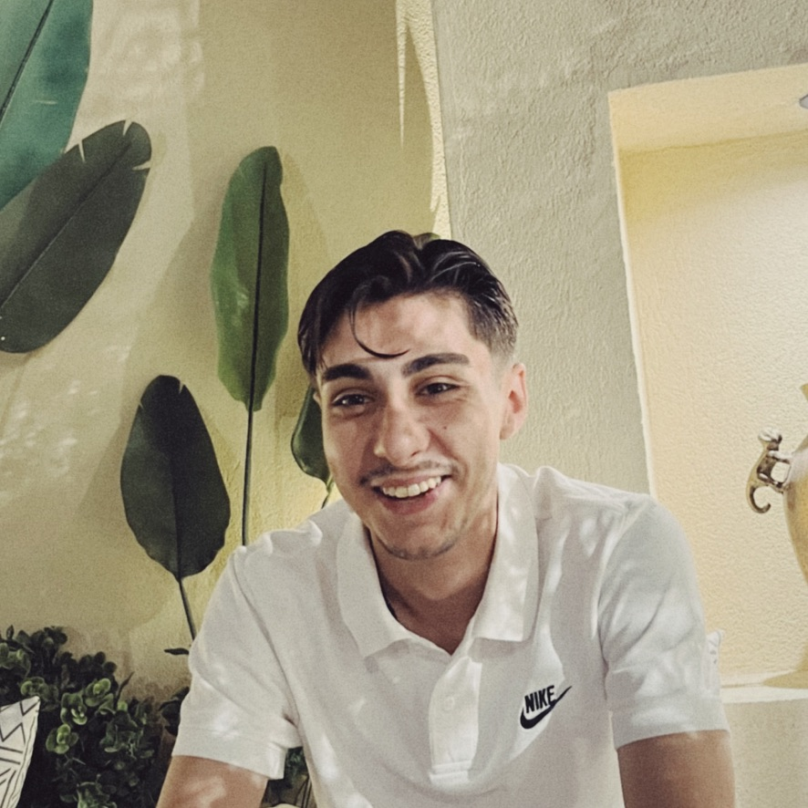

Ege Üniversitesi Meslek Yüksekokulu Mekatronik programı ikinci sınıf öğrencisi ve mezun adayıyım. Akademik eğitimim ve küçüklüğümden beri yürüttüğüm bireysel çalışmalar kapsamında gömülü sistemler ve Nesnelerin İnterneti (IoT) alanlarında uzmanlaşmaya odaklandım. STM32, ESP32 ve Arduino mimarilerinde mikrodenetleyici programlama ile C/ C++ ve Python dillerini kullanarak donanım kontrolü alanlarında pratik proje deneyimine sahibim.